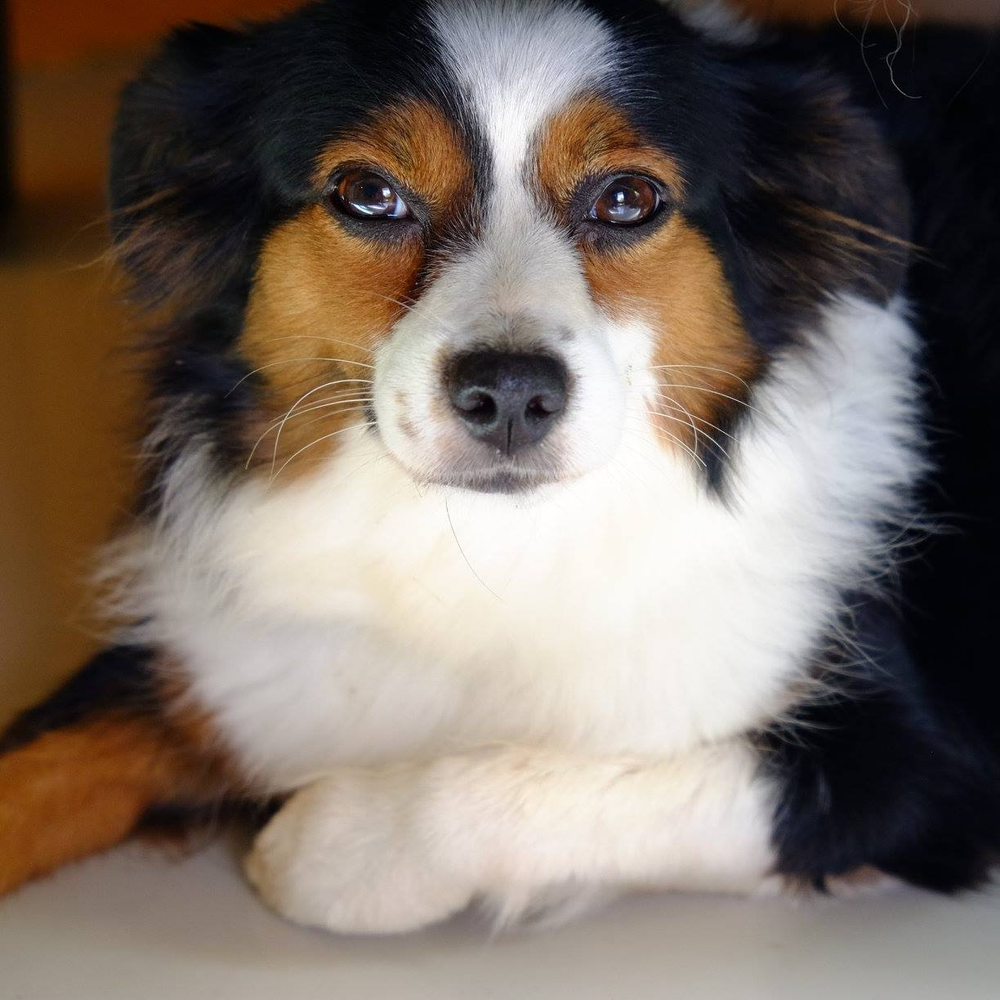

I am a California native, born and raised in the San Fernando Valley and attended UC Berkeley for undergrad, graduating in 2004 with a B.A. in American Studies (Minority Identity) and a minor in Peace and Conflict Studies (Human Rights). During college, she worked in UC Berkeley computer labs, known as “Café,” and met many of her lifelong friends.
In 2006, I moved to New York to attend the Benjamin N. Cardozo School of Law, graduating in 2009, and practiced law for 9 years. I have held positions in human rights organizations, private practice and government doing criminal and civil prosecution. I also have supervisory and management experience through my volunteer position with the New York County Lawyers Association.
In 2018, I decided to move back to California, and attend the UCLA Extension Bootcamp to learn how to code and get a job in the tech community. I am looking forward to making new friends in the community.
When I am not working, I am usually doing something active, whether it be running, biking, swimming, hiking, pilates reformer or yoga. I am also an avid traveller and nature lover, having travelled to [x] states and [x] countries. In 2018, I drove across country and gained a great appreciation for our U.S. National Parks and highly believe in their preservation. I also recently traveled to Thailand and obtained my open water scuba diving certification in Koh Tao and am looking forward traveling around the world to dive and meet new friends.